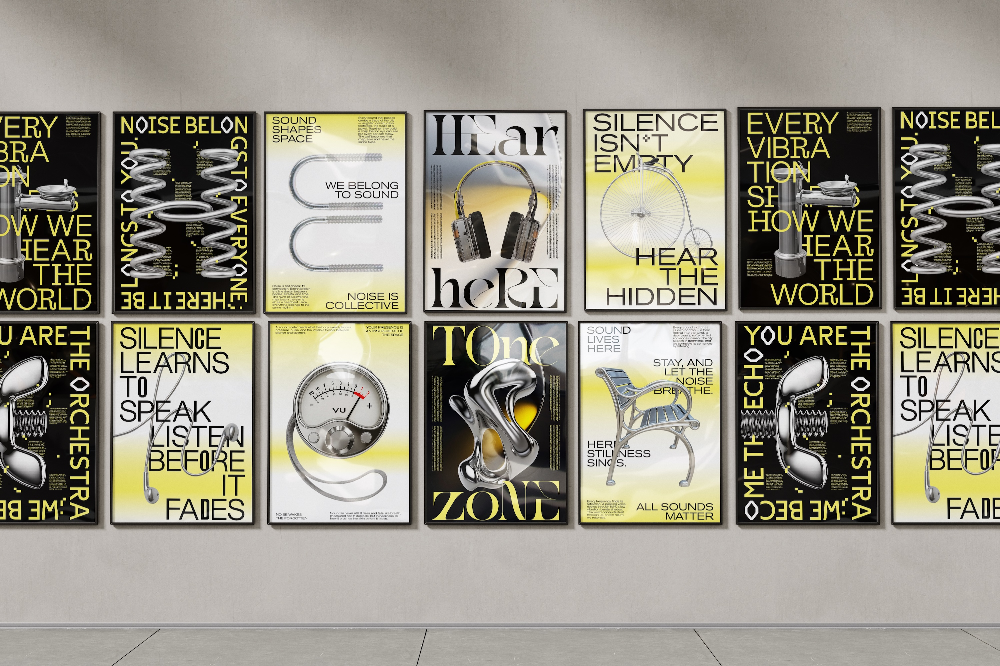
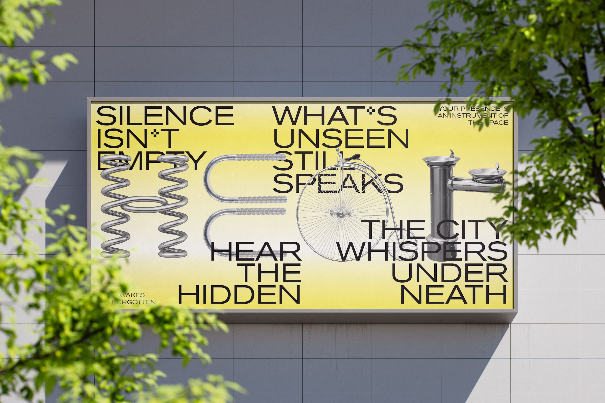
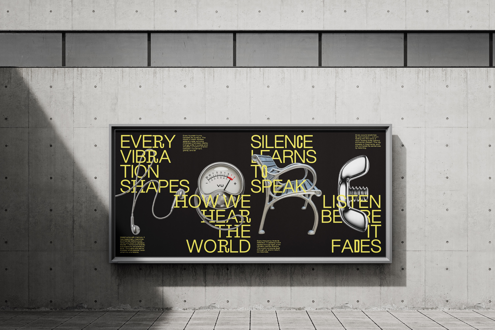
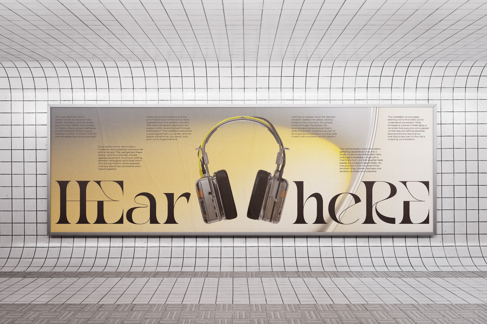
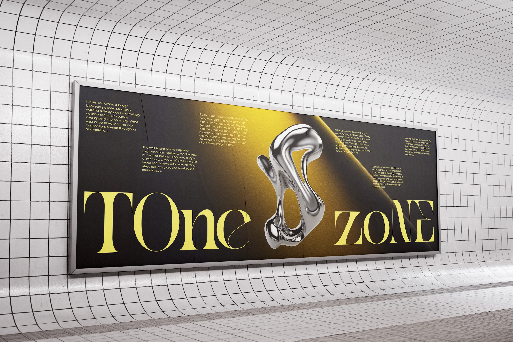
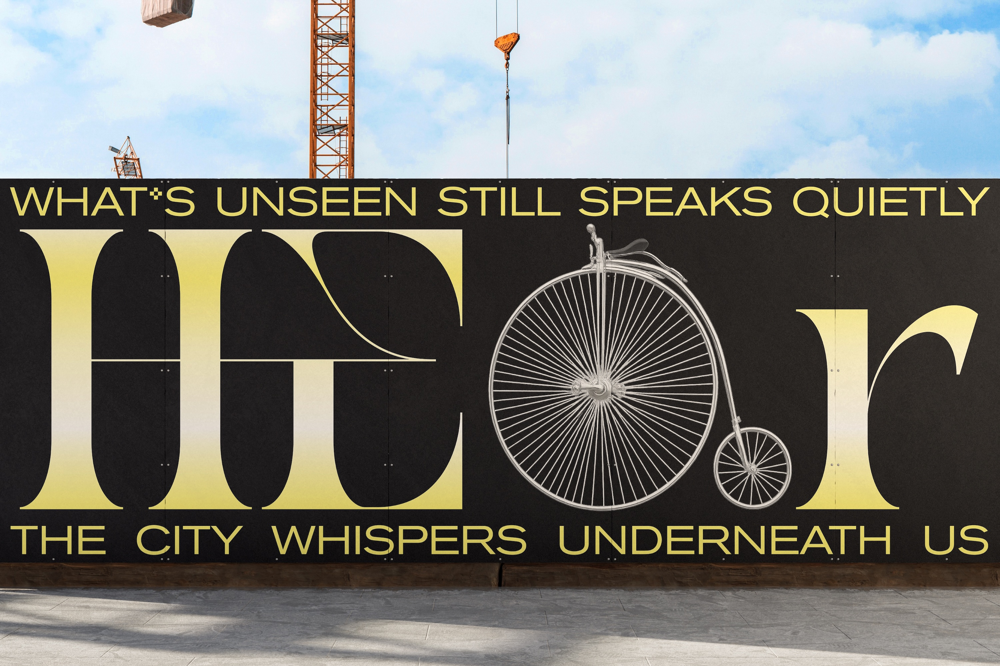
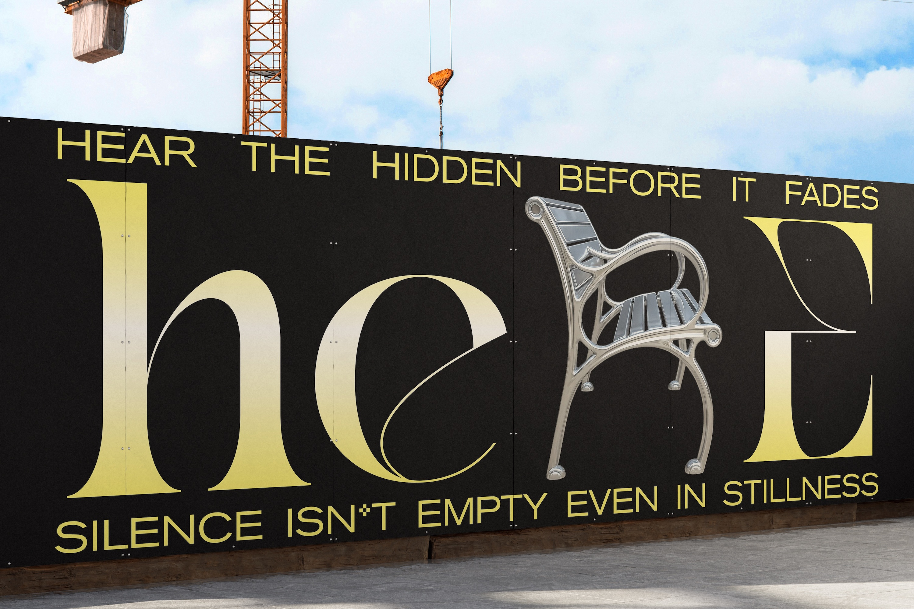
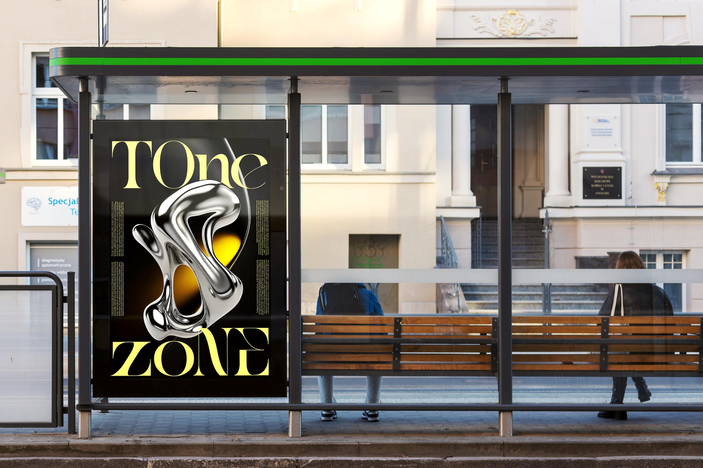
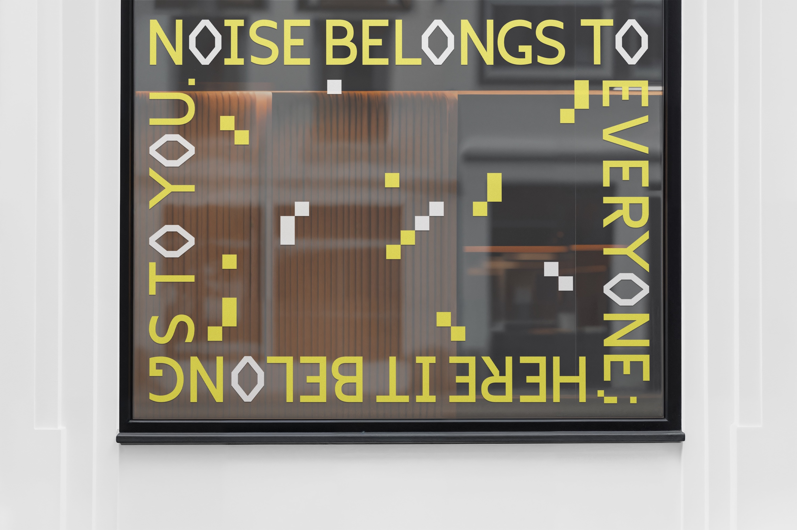

Hear Here is a typographic poster series inspired by Luigi Russolo’s The Art of Noises manifesto. Each letter is constructed from mechanical objects of daily life such as an old bicycle, metal springs, and flowing fountains, materials that generate hums, clicks, and vibrations through motion. By transforming these noise producing objects into typography, the series visualizes Russolo’s idea that modern life already contains its own music.
The posters reframe everyday mechanical noise not as disturbance, but as composition. They invite viewers to listen differently, recognizing that the sounds of machines, movement, and repetition form a living orchestra embedded in daily life.








